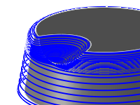

<div id="machineShallowAreas"><p>緩斜面領域に過度に残るカスプを除去するために、Z 一定パスを追加生成するように指定します。</p>
<table class="tipTable" cellspacing="10">
<tr>
<td><center></center></td>
<td><center></center></td>
</tr><tr>
<td><center><p><b>無効</b></p></center></td>
<td><center><p><b>有効</b></p></center></td>
</tr></table>
<p><em>図は 3D 輪郭</em></p>
</div>